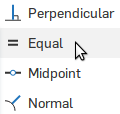
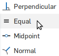

Previous page
8. Start a sketch for the string bridge on your tube
- Select the sketch tool

- Click the bottom face of your tube to start sketching on that face
- Right click and select View normal to sketch plane to line up your view
9. Start to draw the string bridge
- Select the Use (Project/Convert) tool

- Click on the inner circle
- That line will bold, as it becomes part of your sketch
10. Draw the bridge
- Select the Line tool

- Click on the left side of the inner circle
- Click on the right side of the inner circle
- Right click and select escape line
- Repeat to draw a second line below the first
11. Dimension the bridge
- Select the dimension tool

- Click the first line, then the second
- Set the dimension to 0.1
- Select the Equal tool
 

- Click on each line to make their lengths' equal
12. Finish the sketch
- Select the "Trim" tool

- Select the part of the circle outside the lines
- Click the green check to finish the sketch

13. Extrude the bridge
- Select the extrude tool

- Click on "Sketch 2"

- Click on Add to add to your part instead of creating a new part
- Set the Depth to 0.25 in
- Click the "Opposite direction" button
 to make the bridge go inside your tube
to make the bridge go inside your tube
- Click the green check
14. Strengthen the bridge with fillets
- Select the "fillet" tool

- Set the radius to 0.05
- Click the 4 edges of your bridge
- Click the green check
Next page